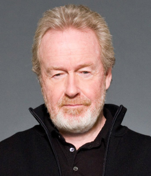

Ridley Scott (nacido el 30 de noviembre de 1937) es un director de cine británico. Ha sido nominado en tres ocasiones a los premios Óscar a la mejor dirección. En enero de 2003 fue nombrado caballero por la reina Isabel II. Algunas de sus películas son consideradas como auténticas obras de culto, especialmente Blade Runner y Alien, el octavo pasajero.
Scott nació el 30 de noviembre de 1937 en South Shields, hijo mediano de Elizabeth y el coronel Francis Percy Scott. Por el oficio de su padre éste no estuvo muy presente en la infancia de Scott. Después de la Segunda Guerra Mundial, su familia se muda a Teeside. Le gustaba mucho ver películas, siendo sus favoritas Ciudadano Kane de Orson Welles, Lawrence de Arabia de David Lean y Los siete samuráis de Akira Kurosawa.
Estudió en la Royal College of Art, donde ayudó a establecer el Departamento de Cine. Dirigió un cortometraje en blanco y negro titulada Boy and Bicycle y protagonizada por su hermano menor Tony Scott y su padre. La película tenía las características visuales que serían marca de Scott en sus futuras películas. En 1963 consiguió un trabajo como escenógrafo en prácticas en la BBC y trabajó en la serie Out of the Unknown.
En 1968, junto con su hermano Tony, funda Ridley Scott Asociados. Durante los años setenta dirige anuncios televisivos y participa con Alan Parker, Hugh Hudson y Hugh Johnson.
Alien, el octavo pasajero
Blade Runner
Gladiator
Hannibal
American Gangster
Prometheus
The Martian
Mejores películas Ridley Scott.